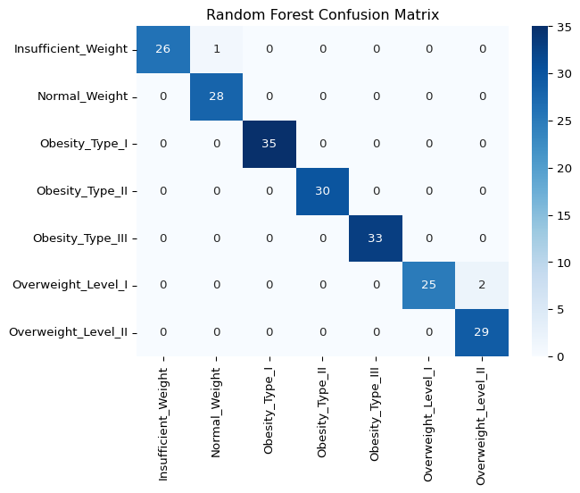
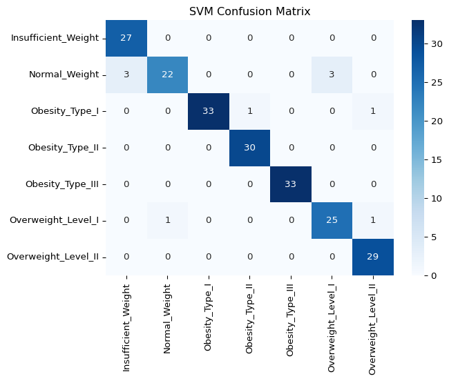
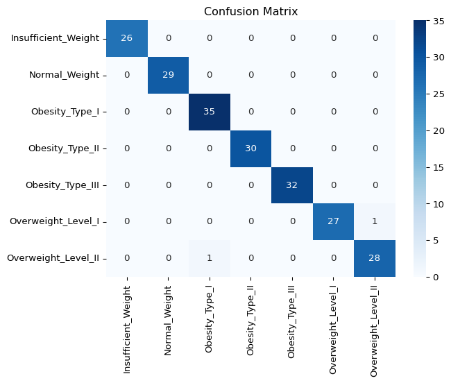

import pandas as pd
import numpy as np
import matplotlib.pyplot as plt
import seaborn as sns
from sklearn.model_selection import train_test_split, GridSearchCV
from sklearn.preprocessing import StandardScaler, LabelEncoder
from sklearn.ensemble import RandomForestClassifier
from sklearn.linear_model import LogisticRegression
from sklearn.svm import SVC
from sklearn.metrics import accuracy_score, precision_score, recall_score, f1_score, confusion_matrix🔹 Paso 0: Preparación
🔹 Paso 1: Carga del Dataset
# Reemplaza con tu archivo/dataset
data = pd.read_csv("../1_data/dataset_obesity_clean.csv", index_col=0)
display(data.head())| Gender | Age | Height | Weight | family_history_with_overweight | FAVC | FCVC | NCP | CAEC | SMOKE | CH2O | SCC | FAF | TUE | CALC | MTRANS | NObeyesdad | |
|---|---|---|---|---|---|---|---|---|---|---|---|---|---|---|---|---|---|
| 0 | Female | 21.0 | 1.62 | 64.0 | yes | no | 2.0 | 3.0 | Sometimes | no | 2.0 | no | 0.0 | 1.0 | no | Public_Transportation | Normal_Weight |
| 1 | Female | 21.0 | 1.52 | 56.0 | yes | no | 3.0 | 3.0 | Sometimes | yes | 3.0 | yes | 3.0 | 0.0 | Sometimes | Public_Transportation | Normal_Weight |
| 2 | Male | 23.0 | 1.80 | 77.0 | yes | no | 2.0 | 3.0 | Sometimes | no | 2.0 | no | 2.0 | 1.0 | Frequently | Public_Transportation | Normal_Weight |
| 3 | Male | 27.0 | 1.80 | 87.0 | no | no | 3.0 | 3.0 | Sometimes | no | 2.0 | no | 2.0 | 0.0 | Frequently | Walking | Overweight_Level_I |
| 4 | Male | 22.0 | 1.78 | 89.8 | no | no | 2.0 | 1.0 | Sometimes | no | 2.0 | no | 0.0 | 0.0 | Sometimes | Public_Transportation | Overweight_Level_II |
data.columnsIndex(['Gender', 'Age', 'Height', 'Weight', 'family_history_with_overweight',
'FAVC', 'FCVC', 'NCP', 'CAEC', 'SMOKE', 'CH2O', 'SCC', 'FAF', 'TUE',
'CALC', 'MTRANS', 'NObeyesdad'],
dtype='object')🔹 Paso 2: Preprocesamiento de Datos
categorical_cols = data.select_dtypes(include=['object', 'category']).columns.tolist()
categorical_cols.remove('NObeyesdad')
data_encoded = pd.get_dummies(data, columns=categorical_cols, dummy_na=False) # cambia variables categoricas a numericas
df_processed = data_encoded.copy()
df_processed.head()| Age | Height | Weight | FCVC | NCP | CH2O | FAF | TUE | NObeyesdad | Gender_Female | ... | SCC_yes | CALC_Always | CALC_Frequently | CALC_Sometimes | CALC_no | MTRANS_Automobile | MTRANS_Bike | MTRANS_Motorbike | MTRANS_Public_Transportation | MTRANS_Walking | |
|---|---|---|---|---|---|---|---|---|---|---|---|---|---|---|---|---|---|---|---|---|---|
| 0 | 21.0 | 1.62 | 64.0 | 2.0 | 3.0 | 2.0 | 0.0 | 1.0 | Normal_Weight | True | ... | False | False | False | False | True | False | False | False | True | False |
| 1 | 21.0 | 1.52 | 56.0 | 3.0 | 3.0 | 3.0 | 3.0 | 0.0 | Normal_Weight | True | ... | True | False | False | True | False | False | False | False | True | False |
| 2 | 23.0 | 1.80 | 77.0 | 2.0 | 3.0 | 2.0 | 2.0 | 1.0 | Normal_Weight | False | ... | False | False | True | False | False | False | False | False | True | False |
| 3 | 27.0 | 1.80 | 87.0 | 3.0 | 3.0 | 2.0 | 2.0 | 0.0 | Overweight_Level_I | False | ... | False | False | True | False | False | False | False | False | False | True |
| 4 | 22.0 | 1.78 | 89.8 | 2.0 | 1.0 | 2.0 | 0.0 | 0.0 | Overweight_Level_II | False | ... | False | False | False | True | False | False | False | False | True | False |
5 rows × 32 columns
df_processed.columnsIndex(['Age', 'Height', 'Weight', 'FCVC', 'NCP', 'CH2O', 'FAF', 'TUE',
'NObeyesdad', 'Gender_Female', 'Gender_Male',
'family_history_with_overweight_no',
'family_history_with_overweight_yes', 'FAVC_no', 'FAVC_yes',
'CAEC_Always', 'CAEC_Frequently', 'CAEC_Sometimes', 'CAEC_no',
'SMOKE_no', 'SMOKE_yes', 'SCC_no', 'SCC_yes', 'CALC_Always',
'CALC_Frequently', 'CALC_Sometimes', 'CALC_no', 'MTRANS_Automobile',
'MTRANS_Bike', 'MTRANS_Motorbike', 'MTRANS_Public_Transportation',
'MTRANS_Walking'],
dtype='object')🔹 Paso 3: Ingeniería de Características
df_processed['BMI'] = df_processed['Weight'] / (df_processed['Height'] ** 2)
X = df_processed.drop(columns=['NObeyesdad'])
y = df_processed['NObeyesdad']
X_train, X_test, y_train, y_test = train_test_split(X, y, test_size=0.2, random_state=42)
rf_model = RandomForestClassifier(random_state=42)
rf_model.fit(X_train, y_train)
importances = rf_model.feature_importances_
importance_df = pd.DataFrame({'feature': X_train.columns, 'importance': importances})
importance_df.sort_values(by='importance', ascending=False).head(20)| feature | importance | |
|---|---|---|
| 31 | BMI | 0.323169 |
| 2 | Weight | 0.179640 |
| 0 | Age | 0.057949 |
| 3 | FCVC | 0.057595 |
| 1 | Height | 0.051101 |
| 8 | Gender_Female | 0.038305 |
| 4 | NCP | 0.036130 |
| 9 | Gender_Male | 0.031118 |
| 7 | TUE | 0.027389 |
| 5 | CH2O | 0.025054 |
| 6 | FAF | 0.024597 |
| 11 | family_history_with_overweight_yes | 0.018680 |
| 10 | family_history_with_overweight_no | 0.016665 |
| 16 | CAEC_Sometimes | 0.016160 |
| 24 | CALC_Sometimes | 0.016082 |
| 25 | CALC_no | 0.013521 |
| 15 | CAEC_Frequently | 0.011879 |
| 29 | MTRANS_Public_Transportation | 0.010567 |
| 26 | MTRANS_Automobile | 0.009534 |
| 12 | FAVC_no | 0.008224 |
🔹 Paso 4: Nuevas Características Basadas en Importancia
df_processed['Weight_Age_Ratio'] = df_processed['Weight'] / df_processed['Age']
df_processed['FAF_TUE_Interaction'] = df_processed['FAF'] * df_processed['TUE']🔹 Paso 5: División del Dataset (Train/Val/Test)
X = df_processed.drop(columns=['NObeyesdad'])
y = df_processed['NObeyesdad']
X_train, X_temp, y_train, y_temp = train_test_split(X, y, test_size=0.2, random_state=42, stratify=y)
X_val, X_test, y_val, y_test = train_test_split(X_temp, y_temp, test_size=0.5, random_state=84, stratify=y_temp)🔹 Paso 6: Escalamiento y Codificación
numerical_cols = ['Age', 'Height', 'Weight', 'FCVC', 'NCP', 'CH2O', 'FAF', 'TUE', 'BMI', 'Weight_Age_Ratio', 'FAF_TUE_Interaction']
scaler = StandardScaler()
X_train_scaled = scaler.fit_transform(X_train[numerical_cols])
X_val_scaled = scaler.transform(X_val[numerical_cols])
X_test_scaled = scaler.transform(X_test[numerical_cols])
encoder = LabelEncoder()
y_train_encoded = encoder.fit_transform(y_train)
y_val_encoded = encoder.transform(y_val)
y_test_encoded = encoder.transform(y_test)
train_df = pd.DataFrame(X_train_scaled, columns=numerical_cols)
train_df['NObeyesdad'] = y_train_encoded
val_df = pd.DataFrame(X_val_scaled, columns=numerical_cols)
val_df['NObeyesdad'] = y_val_encoded
test_df = pd.DataFrame(X_test_scaled, columns=numerical_cols)
test_df['NObeyesdad'] = y_test_encodedtrain_df.columnsIndex(['Age', 'Height', 'Weight', 'FCVC', 'NCP', 'CH2O', 'FAF', 'TUE', 'BMI',
'Weight_Age_Ratio', 'FAF_TUE_Interaction', 'NObeyesdad'],
dtype='object')🔹 Paso 7: Entrenamiento y Evaluación de Modelos
models = {
"Random Forest": RandomForestClassifier(random_state=42),
"Logistic Regression": LogisticRegression(random_state=42),
"SVM": SVC(random_state=42),
}
results = {}
for name, model in models.items():
model.fit(train_df.drop(columns=['NObeyesdad']), train_df['NObeyesdad'])
y_pred_val = model.predict(val_df.drop(columns=['NObeyesdad']))
results[name] = {
"Accuracy": accuracy_score(val_df['NObeyesdad'], y_pred_val),
"Precision": precision_score(val_df['NObeyesdad'], y_pred_val, average='weighted'),
"Recall": recall_score(val_df['NObeyesdad'], y_pred_val, average='weighted'),
"F1-Score": f1_score(val_df['NObeyesdad'], y_pred_val, average='weighted'),
"Confusion Matrix": confusion_matrix(val_df['NObeyesdad'], y_pred_val),
}
# Grafica la matriz de confusión de cada modelo
sns.heatmap(results[name]["Confusion Matrix"], annot=True, fmt="d", cmap="Blues",
xticklabels=encoder.classes_, yticklabels=encoder.classes_)
plt.title(f"{name} Confusion Matrix")
plt.show()
# Muestra la evaluación de cada modelo
print(f'{name}: ')
print(f'Accuracy: {results[name]['Accuracy']:.4f}')
print(f'Precision: {results[name]['Precision']:.4f}')
print(f'Recall: {results[name]['Recall']:.4f}')
print(f'F1-Score: {results[name]['F1-Score']:.4f}')
print('\n\n')
Random Forest:
Accuracy: 0.9856
Precision: 0.9864
Recall: 0.9856
F1-Score: 0.9856
Logistic Regression:
Accuracy: 0.9234
Precision: 0.9275
Recall: 0.9234
F1-Score: 0.9231

SVM:
Accuracy: 0.9522
Precision: 0.9538
Recall: 0.9522
F1-Score: 0.9512
🔹 Paso 8: Tuning de Hiperparámetros (Random Forest)
param_grid = {
'n_estimators': [100, 200, 300],
'max_depth': [None, 10, 20],
'min_samples_split': [2, 5, 10],
}
grid_search = GridSearchCV(RandomForestClassifier(random_state=42), param_grid, scoring='accuracy', cv=5, n_jobs=-1, verbose=1)
grid_search.fit(train_df.drop(columns=['NObeyesdad']), train_df['NObeyesdad'])
best_rf_model = grid_search.best_estimator_
print("Mejores hiperparámetros:", grid_search.best_params_)Fitting 5 folds for each of 27 candidates, totalling 135 fits
Mejores hiperparámetros: {'max_depth': None, 'min_samples_split': 2, 'n_estimators': 200}🔹 Paso 9: Evaluación Final en Test Set
y_pred_test = best_rf_model.predict(test_df.drop(columns=['NObeyesdad']))
test_accuracy = accuracy_score(test_df['NObeyesdad'], y_pred_test)
test_precision = precision_score(test_df['NObeyesdad'], y_pred_test, average='weighted')
test_recall = recall_score(test_df['NObeyesdad'], y_pred_test, average='weighted')
test_f1 = f1_score(test_df['NObeyesdad'], y_pred_test, average='weighted')
test_confusion_matrix = confusion_matrix(test_df['NObeyesdad'], y_pred_test)
sns.heatmap(test_confusion_matrix, annot=True, fmt="d", cmap="Blues",
xticklabels=encoder.classes_, yticklabels=encoder.classes_)
plt.title("Confusion Matrix")
plt.show()
print(f"Accuracy: {test_accuracy:.4f}")
print(f"Precision: {test_precision:.4f}")
print(f"Recall: {test_recall:.4f}")
print(f"F1-Score: {test_f1:.4f}")
Accuracy: 0.9904
Precision: 0.9906
Recall: 0.9904
F1-Score: 0.9904importances = best_rf_model.feature_importances_
importance_df = pd.DataFrame({'feature': train_df.drop(columns=['NObeyesdad']).columns, 'importance': importances})
importance_df.sort_values(by='importance', ascending=False).head(10)| feature | importance | |
|---|---|---|
| 8 | BMI | 0.453569 |
| 2 | Weight | 0.189164 |
| 9 | Weight_Age_Ratio | 0.072893 |
| 3 | FCVC | 0.069114 |
| 1 | Height | 0.063375 |
| 0 | Age | 0.057318 |
| 4 | NCP | 0.027587 |
| 6 | FAF | 0.018559 |
| 5 | CH2O | 0.017636 |
| 7 | TUE | 0.017178 |
import joblib
joblib.dump(best_rf_model, 'modelo_rf.pkl') # Guarda el modelo de clasificacion
joblib.dump(scaler, 'scaler.pkl') # Guarda el escalador de los datos numericos
joblib.dump(encoder, 'encoder.pkl') # Guarda el codificador de las categorias de Obesidad['encoder.pkl']import gradio as gr
import numpy as np
import joblib
import ollama
MODELO = 'mistral'
# Cargar modelo de lenguaje local
ollama.pull(MODELO)
# Cargar modelo, scaler y encoder
model = joblib.load("modelo_rf.pkl")
scaler = joblib.load("scaler.pkl")
encoder = joblib.load("encoder.pkl")
# Diccionario de traducción
TRADUCCION_CLASES = {
"Insufficient_Weight": "Peso insuficiente",
"Normal_Weight": "Peso normal",
"Overweight_Level_I": "Sobrepeso nivel I",
"Overweight_Level_II": "Sobrepeso nivel II",
"Obesity_Type_I": "Obesidad tipo I",
"Obesity_Type_II": "Obesidad tipo II",
"Obesity_Type_III": "Obesidad tipo III"
}
# Función para generar el prompt para Ollama
def generar_prompt(datos, clasificacion):
prompt = f"""
Eres un asistente en nutrición y salud. El siguiente es el perfil de un paciente, incluyendo datos antropométricos y hábitos. Con base en esto, proporciona:
1. Un análisis breve de su estado de salud.
2. Una recomendación personalizada para mejorar su salud.
3. Consejos adaptados a su estilo de vida.
Datos del paciente:
- Edad: {datos['Age']} años
- Estatura: {datos['Height']} m
- Peso: {datos['Weight']} kg
- Frecuencia de consumo de vegetales (FCVC) de 0-3: {datos['FCVC']}
- Número de comidas diarias (NCP): {datos['NCP']}
- Consumo diario de agua (CH2O) de 0-3: {datos['CH2O']}
- Nivel de actividad física (FAF) de 0-3: {datos['FAF']}
- Horas frente a pantallas (TUE) de 0-2: {datos['TUE']}
Resultado del modelo de clasificación: **{clasificacion}**
Sé empático, claro y usa lenguaje sencillo. Utiliza lenguaje español latino en todo momento. Escribe la recomendación en tercera persona.
"""
return prompt
# Función principal
def predecir_obesidad(Age, Height, Weight, FCVC, NCP, CH2O, FAF, TUE):
# Variables derivadas
BMI = Weight / (Height ** 2)
Weight_Age_Ratio = Weight / Age
FAF_TUE_Interaction = FAF * TUE
# Preprocesamiento
features = np.array([[Age, Height, Weight, FCVC, NCP, CH2O, FAF, TUE,
BMI, Weight_Age_Ratio, FAF_TUE_Interaction]])
features_scaled = scaler.transform(features)
# Predicción
prediction = model.predict(features_scaled)
clase = encoder.inverse_transform(prediction)[0]
clase_es = TRADUCCION_CLASES.get(clase, "Clasificación desconocida")
# Generar prompt para LLM
datos_usuario = {
"Age": Age, "Height": Height, "Weight": Weight,
"FCVC": FCVC, "NCP": NCP, "CH2O": CH2O,
"FAF": FAF, "TUE": TUE
}
prompt = generar_prompt(datos_usuario, clase_es)
# Llamar al modelo local con Ollama
respuesta_llm = ollama.chat(
model=MODELO, # puedes usar "llama2" o el modelo que tengas disponible
messages=[{"role": "user", "content": prompt}]
)["message"]["content"]
# Retornar clasificación + recomendación
resultado = f"📊 Clasificación: {clase_es}\n\n🧠 Recomendación personalizada:\n{respuesta_llm}"
return resultado
# Interfaz Gradio
interface = gr.Interface(
fn=predecir_obesidad,
inputs=[
gr.Number(label="Edad"),
gr.Number(label="Estatura (m)"),
gr.Number(label="Peso (kg)"),
gr.Slider(1, 3, step=0.1, label="Frecuencia de consumo de vegetales (FCVC)"),
gr.Slider(1, 4, step=1, label="Número de comidas (NCP)"),
gr.Slider(1, 3, step=0.1, label="Consumo de agua (CH2O)"),
gr.Slider(0, 3, step=0.1, label="Actividad física (FAF)"),
gr.Slider(0, 2, step=0.1, label="Uso de tecnología (TUE)")
],
outputs="text",
title="Clasificador de Obesidad con Recomendación Personalizada",
description="Ingresa tus datos para obtener tu clasificación de obesidad y una recomendación personalizada."
)
interface.launch(share=True) # share=True genera un enlace para compartir/Users/edwinmacmini/Documents/Datacamp/venv/lib/python3.13/site-packages/tqdm/auto.py:21: TqdmWarning: IProgress not found. Please update jupyter and ipywidgets. See https://ipywidgets.readthedocs.io/en/stable/user_install.html
from .autonotebook import tqdm as notebook_tqdm* Running on local URL: http://127.0.0.1:7860
* Running on public URL: https://da03a2d63f6f244be8.gradio.live
This share link expires in 72 hours. For free permanent hosting and GPU upgrades, run `gradio deploy` from the terminal in the working directory to deploy to Hugging Face Spaces (https://huggingface.co/spaces)